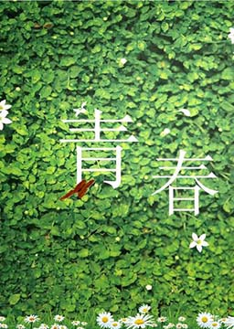

《英语美文: 青春》中英双语阅读

英语美文: 青春 (Young)
作者：未知 (unknow) [未知]
青春是绿色的，像滴翠的青竹，像坦荡的草原，充满无限生机和活力。我们不能做到青春活得不留遗憾，但要做到在青春里活得心安。当我们年轻时日子很长，对老去总觉得遥远，可它总是在我们意识到之前便转瞬即逝了……这就是青春。而我们要记住的是，幸福只是行进中的旅程，不是目的地。经历的那些挣扎可以让你变得更加坚强，那些改变可以让你变得更有智慧。青春终将散场，唯独记忆永垂不朽。
难度：
大学
长度：
短篇
分类：
社会
起点 The Beginning
年轻人 Youth
生活的一课 A Lesson of Life
思考是成功的前提 Thinking Is the Premise of Success
爱自己是一场毕生浪漫的开始 To Love Oneself Is the Beginning
人的青春 Man's Youth
坚持不懈，勇往直前 I Will Persist Until I Succeed
镜子的人生哲理 The Mirror
在思考中成长 Growth That Starts from Thinking
年轻与年老 Youth and Age
从零开始 We'e Just Beginning
我为什么而活 What I Have Lived for
科比·布莱恩特的成长之路 Kobe Bryant’s Growing Road
未选择的路 The Road Not Taken
转眼青春的散场 Flying Youth
树下的男孩 The Boy Under the Tree
在探索中成长 Growing in the Middle Ground
与死神擦肩而过 Brush Past the Death
面对人生的十字路口 The Fork in the Road
成长的树根 Growing Roots
成功之路，永不言迟 It’s Never Too Late For Success
与其做梦不如行动 From Dreamers to Doers
年轻人应该有理想 Young People Should Have Ideals
觉醒时分 A Time to Awake
艰辛的人生 The Strenuous Life
大学的意义 Universities and Their Function
鞋钉 The Shoe Tacks
充实你的思想 Feed Your Mind
两条路 The Two Roads
有感于青春常在 On the Feeling of Immortality in Youth
热情带你前进 Enthusiasm Takes You Further
一直走在阳光里 Keep Walking in Sunshine
马克·吐温致青年人的忠告 Mark Twain's Advice to Youth
徒步旅行 Walking Tours
探寻未知的美好 Finding What You Do Not Seek
飘逸而行 Go Easy and Enjoy Yourself in Harmony
让青春常驻 How to Stay Young